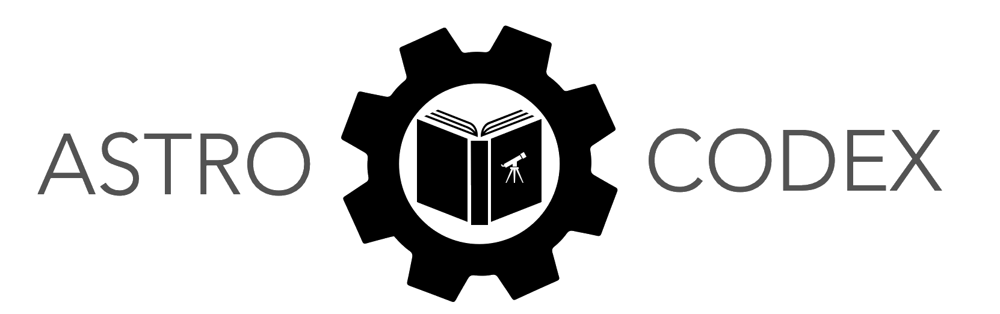

Overview#
The AstroCodEx is a community-built and maintained set of modular exercises designed to target key programming skills needed in astronomical research.
The exercises within the codex span a wide range of astronomical topics, use a multitude of astrophysical datasets, and can be mixed and matched as desired by instructors to fit their pedagogical needs.
Every assignment in the codex is peer-reviewed and is a living documents — educators (who are free to download and modify the exercises at will) can create pull requests to make additions, improvements, or alternate versions of the exercises. The exercises also have associated tests which confirm they can be successfully completed in different environments, with updated versions of the package dependencies. Furthermore, the use of the myst-tools framework allows for rich assignment augmentation, including hover-text for cross referencing definitions, equations, or links, as well as the ability to create annotations such as notes, hints, and warnings.
Every exercise is tagged with one or more Core Programming Skills — e.g., “control flow: conditionals”, “control flow: looping:, “library: numpy”. The astronomical examples used to illustrate these skills range from simple (no data; introductory equations such as Kepler’s Law) to extensive (the entire 3D-HST survey, or a snapshot from TNG50). The focus is on programming research skills – so, while brief summaries of the astrophysics involved in an exercise are provided, it is up to instructors to fill in any gaps or to select exercises which align with their course content.
Currently, AstroCodEx has a focus on exercises in the Python programming language, but exercises in other programming languages are also welcome.
Motivation#
The driving motivation for the creation of the codex is that crafting high-quality exercises that effectively teach research coding skills is challenging and time consuming. Traditionally, such exercises (or whole assignments) have been developed by instructors in isolation for various courses. Astronomy as a field increasingly prioritizes research skills at the undergraduate level — this is necessary, more than ever, for graduate school admissions, but programming is also a particularly useful skill that graduating students can take into industry. There is thus a growing conversation about the need to transition the means by which early-career undergraduates learn research coding skills, from a mix of
external summer internships (e.g., REUs)
haphazard skill development from inheriting code and asking around
bootcamps
self-teaching
to courses focused on this skill (or the integration of such skills into the majority of undergraduate astronomy/astrophysics coursework).
This is a noble goal, but an immediate challenge is the need for high-quality exercises and mini-projects that can both teach core programming skills and leverage unique applications to astronomy. Over the last decade, there has been a (welcome) increase in the number of resources (usually guides/instructions/walk-throughs or textbooks) available to help one learn “astronomical coding,” but there has not existed a single, centralized repository of assignable exercises to help instructors put together coding-forward courses.
Often instructors feel the need to do this themselves, in part because confirming that an abstract task (plot this relation from this dataset) actually works means doing it yourself. Our aim is to curate a set of peer-reviewed, working, exercises, which are small and modular enough in scope to be integrated together with other assignments or projects within a course.
What is an Exercise?#
We use the term exercise throughout the codex to refer to the units of content in the repository. These are typically not the full length of a standard homework assignment, but several exercises together could constitute a full assignment. Some exercises are quite short (several lines of text and several lines of code), while others are significantly more involved. Our goal is to have a modular set of these exercises that can be used as a scaffold to build out full assigments, or as a drop-in to target specific skill sets.
Some of the larger datasets used in the codex lend themselves to multiple exercises that may be somewhat related. You can browse the codex in multiple ways — by dataset, which will group these together, or by CPS, which groups exercises by the tagged skill sets they are targeting.
Core Programming Skills#
We currently sort exercises by the core programming skill that they target. These are
UNIX/SHELL (filesystem navigation, environments, commands)
Basic Python (arithmetic, variables, datatypes)
Control Flow (conditionals, masks, loops)
Libraries (
numpy,scipy,astropy,matplotlib,pandas, etc.)Data I/O (reading in
ascii,fits,hdf5, using different methods)Functional Programming (defining functions, args, kwargs, packing/unpacking, scope, documentation)
Object-Oriented Programming (defining classes, subclasses, methods, attributes, setters/getters, decorators, overloading)
Model Fitting (e.g., chi-squared, linear least squares, MCMC methods)
Numerical Methods (Runge-Kutta / N-body solver, fluids)
Usage#
The codex is organized as a juptyer-book built with myst tools. This allows for exercises to be rendered as webpages with rich text annotation (such as tips and warnings) which can also be rendered directly within jupyter notebooks. Any exercise can be downloaded as a notebook in one click from the page. Each exercise links directly to any needed external dataset. The admonitions used throughout can be rendered directly within jupyter-lab by using the jupyterlab myst plugin, which is pip-installable. But one could also simply extract the questions into a more bare-bones format.
Anyone is welcome to use, download, and modify the materials on this site to suit their teaching needs. We ask that solutions to the exercises in this repository (whether ours or your own) not be distributed publicly.
Solutions to the exercises are stored in a private GitHub repository within the astrocodex organization. Instructors desiring solutions for any subset of the exercises are encouraged to submit a request to imad.pasha@yale.edu. Solutions will be provided upon reasonable evidence of an instructor role. We ask instructors to use discretion with solutions; as these exercises are designed for use in a classroom setting, their longevity is aided by a lack of solution proliferation.
Contributing#
The astrocodex is open-source, and we encourage contributions. If you have an exercise or set of exercises you think would fit well into the codex, you can create a submission following our submission guidelines.
Exercises submitted to the codex should have
an author / contributer list with associated ORCIDs,
A short (one-line) description of the contents
A set of tags
A
requirements.txtfile with a list of any packages needed to complete the exercises,Any images or external data files needed,
A short list of learning objectives for the assignment
Any relevant instructor notes for carrying out the assignment
We are working toward a streamlined and maintainable process for submissions. For the time being, submissions can be sent to imad.pasha@yale.edu.